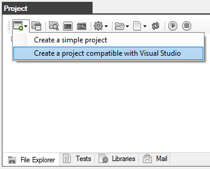
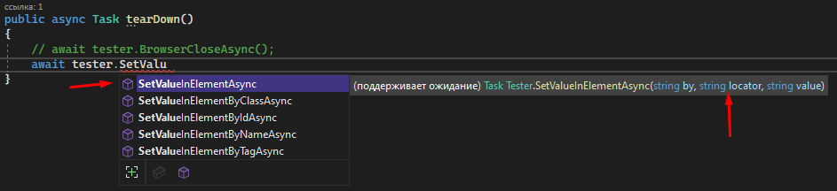

Creating a project compatible with Visual Studio
1. In the Project window, on the Explorer tab or in the main Create Project menu, click the "Creating a project compatible with Visual Studio" button


2. A window opens for entering the project name.
Prerequisite the project name must be in Latin letters and without spaces.

3. Create a folder that will contain the project with any name and anywhere on the disk.
In this case, the Project folder has been created at C:\Hat-1.0.0\
Select the project folder and click OK

4. In the Project window, the contents of the project will be displayed on the Explorer tab.
As you can see, the project is not empty, it contains several demo autotests.

5. This project supports work in Visual Studio (it is assumed that you already have Visual Studio installed)
To open a project in Visual Studio, click on the Explorer button in the Project window

Then double-click on the file with the *.sln extension (in this case, MyTests.sln)

When Visual Studio is loaded, our project will immediately be opened and available for work in the Solution Explorer window

Double-click on the ExampleTest1.cs file to open it in the code editor.
In line 59, a line is commented out with a call to the BrowserCloseAsync() method that closes the browser.
This is necessary so that the browser does not automatically close after the completion of the autotest.

It is very convenient to use Visual Studio because the editor, when entering, shows a drop-down list with all available methods, as well as shows the syntax of the selected method and the variables required by it.

The project has been successfully created.
Created with the Personal Edition of HelpNDoc: Free Web Help generator